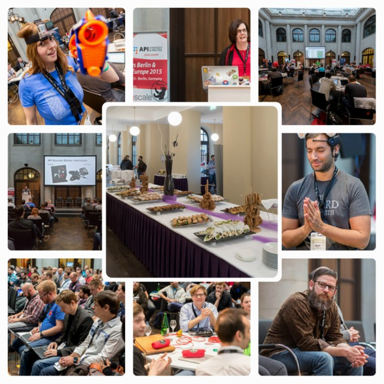
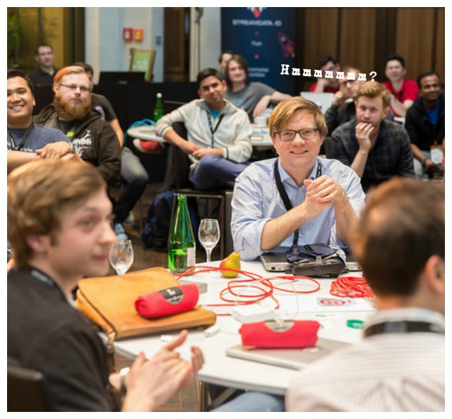
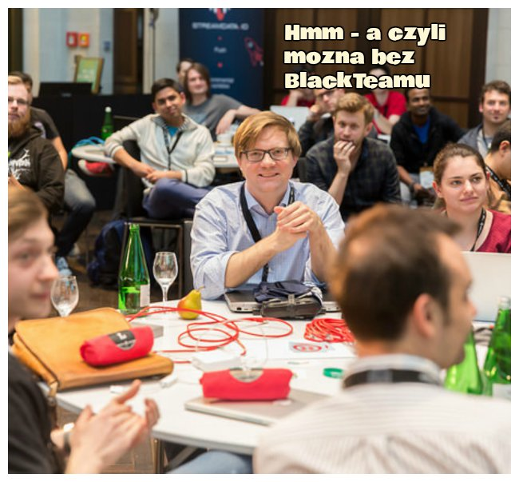
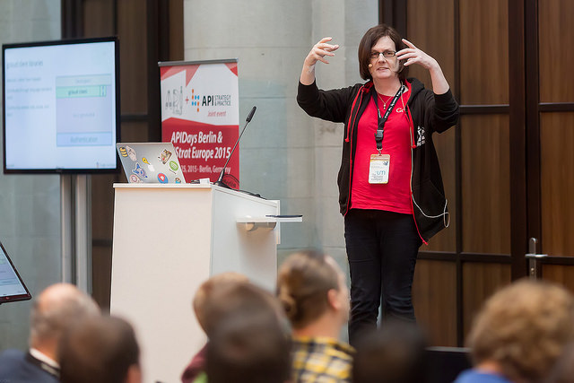
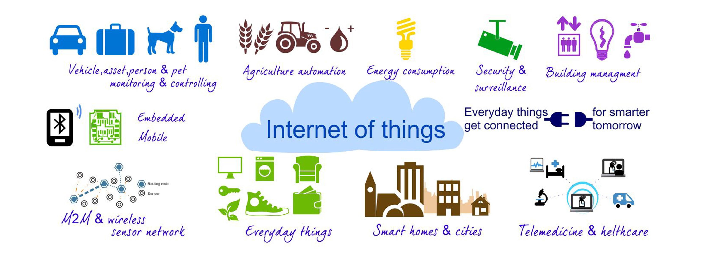

Internet of things is a scenario in which objects, animals or people are provided with unique identifiers and the ability to transfer data over a network without requiring human-to-human or human-to-computer interaction.
~Google

Nie jest możliwe stworzenie dobrego softu bez poznania jego ograniczen. Czyli nie tylkoo unit test i logi czy monitoring ale tez - load tests, security tests.
.
Public API to nic innego jak system dystrybucji taki jak HTTP czy nawet zwykla strona internetowa
Jak najbardziej luźne powiązanie pomiędzy providerem a clientm !
Aby zmiany providera w jak najmniejszy sposób wpływały na klienta. Szczególnie ważne w momenice kiedy mamy bardzo dużo róznych klientów.
Wyobraźcie sobie strone internetowa która aby działać poprawnie za każdą zmianą musi wysłać notyfikacje do swoich klientów i czekać aż dostosują się do tej zmiany.
Nie brzmi dobrze, co?
/
#